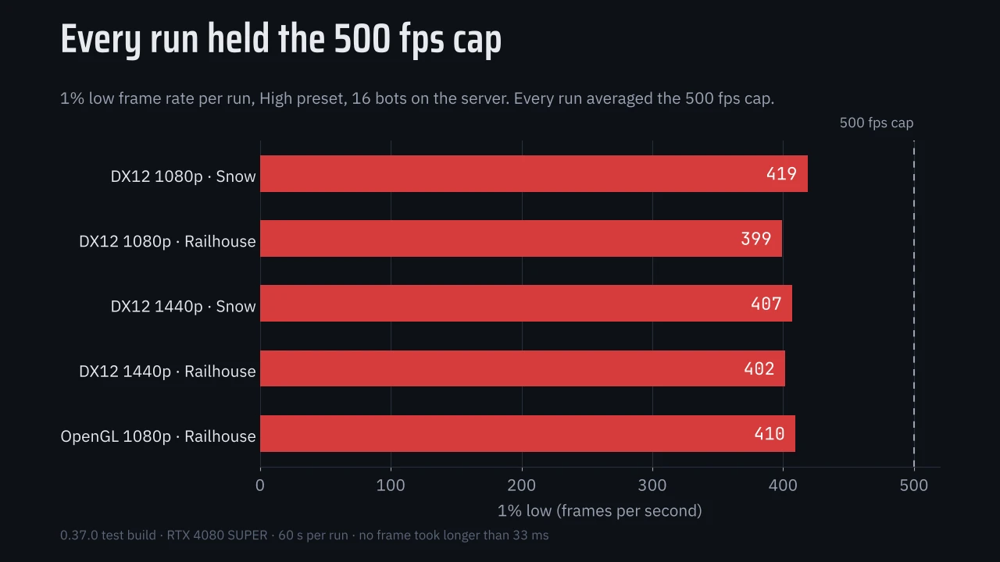
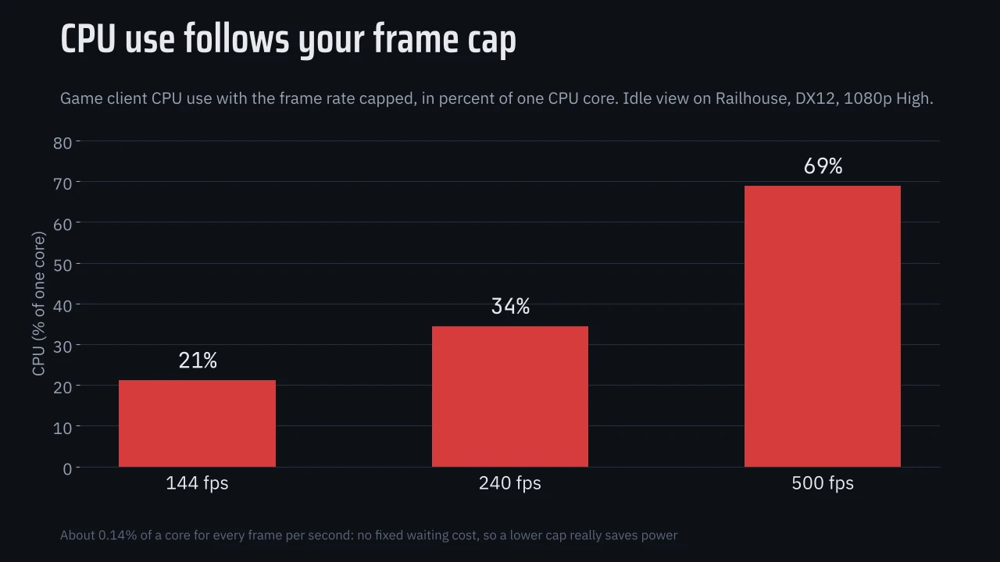
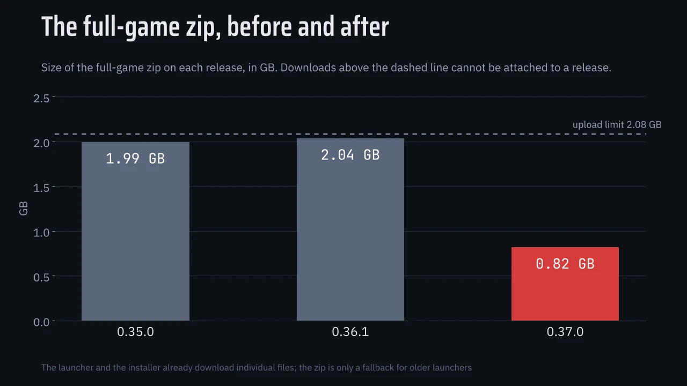

Measuring every millisecond
We measured the whole game, from frame times and loading screens to the servers and the download, before deciding what to fix. Here is what we found, what is already fixed and what comes next.
TrueCombat: Platinum runs on an engine first released in 2003, which we have rebuilt piece by piece: a new DirectX 12 renderer, new audio, new menus and a new launcher. Each of those changes was tested on its own. This week we stepped back and measured the whole game in one go, to answer one question: where does it still waste your time, your CPU or your bandwidth?
The rule was simple. Measure first, change second. Nothing in this post is a guess. Every number comes from a test run, and every fix was measured again afterwards.
Frame rate: not the problem
We started with the question players ask first. How does it run?
We ran the 0.37.0 build at 1080p and 1440p on DirectX 12 and OpenGL, on Snow and Railhouse, with 16 bots fighting on the server and the camera moving the whole time. Each run lasted a full minute.

Every run held the engine's 500 fps cap on average, and the slowest 1% of frames never dropped below 399 fps. Across all five runs, not one frame took longer than 33 milliseconds, which is the point where you would start to feel a stutter. The worst single frame we saw took 6.7 ms.
The engine caps the frame rate at 500 fps, so these runs could not go higher. They show that the game holds that cap with room to spare, even at 1440p with a full server.
These numbers come from a fast PC with an RTX 4080 SUPER, so your own results will vary. What they do tell us is that the game no longer has stutters of its own. Earlier this year, weapon models and sounds loaded the first time you saw them, which caused hitches of up to 1.9 seconds in the middle of a match. That was fixed in 0.32.0, and these runs confirm it is still fixed.
Loading: under two seconds
A map now loads in about 1.7 seconds from the moment you connect to your first frame in game. A cold start on a fresh profile was as fast as a warm one, at 1.73 seconds against 1.75 seconds. The material cache added in 0.36.0 and the earlier loading fixes have done their job.
The launcher opens its window about 0.1 seconds after you start it.
Your CPU, your battery
Frame rate is not the only thing that matters. On a laptop, or with Discord and a browser open next to the game, CPU time also means heat, fan noise and battery life. So we measured how much CPU the game uses at different frame caps.

CPU use rises in step with the frame rate, at about 0.14% of one core for every frame per second. That is good news. It means the game does not waste time waiting between frames, so a lower cap really does save power. If you play on a 144 Hz monitor, capping at 144 fps uses less than a third of the CPU that 500 fps does.
Servers that wait more efficiently
Our servers run at 128 ticks per second, which gives them 7.8 milliseconds between ticks. In the time between two ticks a server should sleep. We found that every server stayed busy-waiting for the last millisecond before each tick, checking the clock over and over instead of sleeping. That is about an eighth of a CPU core per server, even with nobody playing.
On Linux, where the official servers run, 0.37.0 already fixes this. A server now sleeps until a quarter of a millisecond before its next tick. On our live servers that cut the CPU use of an empty server from 12.6% to 3.1% of a core, and of a server with 10 bots from 15.3% to 6.7%. Ticks arrive just as precisely as before.

Windows has the same habit. Windows can only wait in steps of whole milliseconds, so a Windows server can busy-wait for up to two milliseconds of every tick. That matters if you host a server on your own PC. A fix for Windows is in testing. It uses a high-precision timer that Windows 10 and 11 provide, so the server can sleep instead. In our first tests it cut an empty server's CPU use about tenfold, but its ticks were not yet as punctual as we want, so we are tuning it before it ships.
None of this changes how the game plays. Ticks arrive on time, just as before. The servers simply stop working while there is nothing to do.
A smaller download
Every release used to include a full-game zip as a backup download. That zip was getting close to the 2.08 GB limit for a file on a release, and 0.37.0 would have gone over it.

The launcher and the installer already download individual files, so the zip was only there for older launchers. In 0.37.0 the launcher can update without it, and the zip is down from 2.04 GB to 0.82 GB because it now leaves out the HD texture packs. That fallback zip will be dropped completely in a later release. The HD packs still come with every install, exactly as before.
Faster builds, faster fixes
We also measured how we build and test the game. A full test run before a release takes about 45 minutes when everything passes, but one flaky test could restart the whole run and hold the test machine for hours. The build itself was using only 6 of the test machine's 28 processor threads.
Builds now use every thread, and release packaging hashes files as it streams them instead of loading more than a gigabyte into memory first. That means fixes reach you faster.
Nine sounds that never played
While going through the logs from these runs, we found nine sounds that the game asked for on every start but could not find. They are referenced by the original TrueCombat: Elite data, but the files were never shipped, not even in the original game. Every one of them played as silence.
Some of them you would have noticed if you knew they were missing:
- the knife swing
- the distant echo of the MAC-10 and the silenced MAC-10
- the hum of the lights on Snow, Northport and Stadtrand
- the sound of landing on a fence
- the sounds of some breakable objects
An upcoming update points each one at the closest matching sound the game already has: the knife's own slash sounds, the MAC-10's existing distant shot, the existing light hum, and the metal landing sound. Two of the nine are menu hover sounds that the menus were never designed around, so they stay silent on purpose. They just no longer log an error.
What is next
The Windows server fix and the missing sounds are in testing for an upcoming update. We will keep running these measurements before every major release, so that a slowdown shows up in our numbers before it shows up in your game.
If you see stutters, long loading screens or high CPU use on your own PC, tell us on Discord. A report that names your graphics card and settings is the fastest way for us to find it.
Was this worth the read?
Anonymous. No account, no cookies.
Questions about this post? Ask the team on Discord.